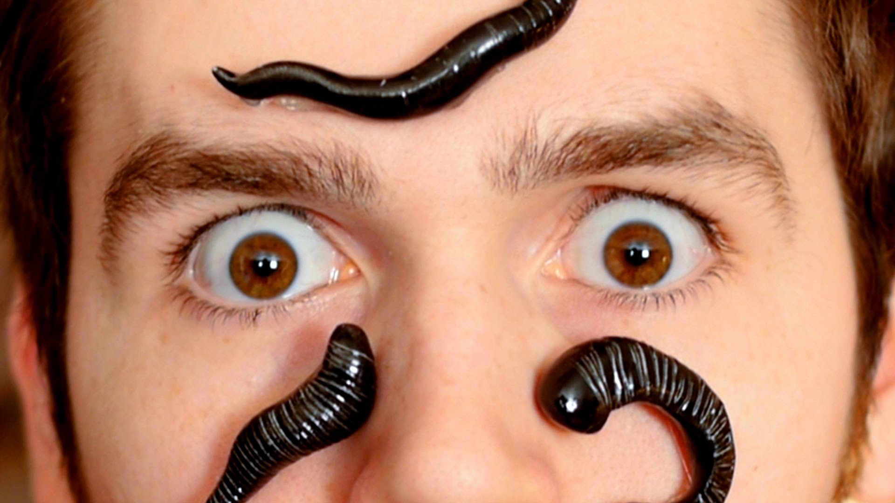

太誇張啦!!??水蛭有32個大腦!?
比扯鈴還扯!!!! 看這標題感覺在釣魚
無用冷知識 快分享給你那些熱愛水蛭的好友吧

快來看看到底 花生省魔術?!?!
- 水蛭是是環節動物門蛭綱的一類動物，頭部有吸盤，並有麻醉作用，一但附著在人體，人很難感覺得到，水蛭叮咬人或動物時，用吸盤吸住皮膚，並鑽進皮肉吸血，且吸血量非常大，是其體重的2—10倍。水蛭屬雌雄同體動物，能耐饑餓，甚至一兩年不進食也不會死。
-
世界上有400—500種水蛭。水蛭多生活在淡水中，少數生活在海水或鹹水之中，還有一些陸生和兩棲的。它們中有以吸取血液或體液為生的種類，也有捕食小動物的肉食種類。這樣的水蛭，居然擁有著32個大腦?真是不敢置信讓我們繼續看下去~~~~~~
- 對於人類來說，水蛭既可怕又神奇。它們會吸我們的血，有時這也算是一種寄生關係，因為它們的益處在於可以幫助清理被感染傷口。不過，這種動物最迷人的地方是 : 它們居然神奇地擁有五對眼睛。數量多的300顆牙齒和32個大腦。不過所謂的32個大腦是32個中樞神經
- 所以從學術上講，它只有一個大腦，但是這個大腦由32個神經中樞組成。
- 好好我知道文章好像和標題不太一樣
- 反正有學到就好嘛!!
我找資料也是很累der啊大哥